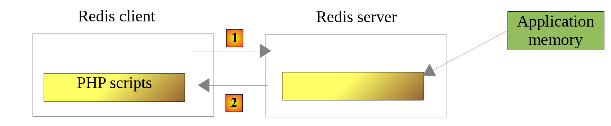

20. Ejercicio de aplicación – Versión 10
La versión anterior mostró que los datos tributarios, compartidos por todos los usuarios de la aplicación, deben almacenarse en una memoria con alcance [application]. Usaremos un servidor Redis (https://redis.io) para implementarla.
20.1. Redis
Redis es un servidor que almacena datos en memoria en forma de pares [clave, valor]. Es muy rápido y las aplicaciones web lo utilizan ampliamente como caché, es decir, como almacén de datos costosos de obtener. La memoria con alcance [application] se implementará con un servidor Redis. Los scripts PHP que necesiten esta memoria de aplicación serán clientes de este servidor:

- En [1], un script (PHP) envía un comando al servidor Redis, por ejemplo, para solicitar el valor asociado a una clave;
- En [2], el servidor Redis responde.
El servidor Redis funciona de manera independiente de los scripts PHP: los datos almacenados en él siguen disponibles de una solicitud a otra y para todos los usuarios de la aplicación.
20.2. Instalación de Redis
[Laragon] incluye un servidor Redis que está deshabilitado por defecto. Puede habilitarlo en las preferencias de [Laragon] (menú [Preferences], pestaña [Services & Ports]) marcando la casilla [Redis]. Deje el puerto [6379] como está, ya que es el puerto predeterminado que usan los clientes de Redis. El servidor Redis se inicia entonces junto con los demás servicios de [Laragon] (Apache, MySQL...) al hacer clic en el botón [Start All].
20.3. El cliente Redis en modo de comandos
Se puede consultar el servidor Redis en modo de comandos. Abra un terminal de [Laragon] y escriba el comando [redis-cli], que inicia el cliente del servidor Redis en modo de comandos. El cliente muestra entonces el indicador [127.0.0.1:6379>]: está conectado al servidor Redis de la máquina local (dirección IP 127.0.0.1) en el puerto 6379. Este es un ejemplo de sesión:
| > redis-cli
127.0.0.1:6379> command count
(integer) 240
127.0.0.1:6379> set title "PHP 8 by example"
OK
127.0.0.1:6379> get title
"PHP 8 by example"
127.0.0.1:6379> exists title
(integer) 1
127.0.0.1:6379> del title
(integer) 1
127.0.0.1:6379> get title
(nil)
127.0.0.1:6379> exists title
(integer) 0
127.0.0.1:6379> quit
|
- Línea 3: el cliente Redis tiene más de 200 comandos para comunicarse con el servidor. Uno de ellos, [command count], muestra el número exacto de comandos disponibles en la versión utilizada;
- Líneas 4–7: solo veremos los comandos que necesitaremos en nuestra aplicación PHP. Usaremos Redis para una sola cosa: asociar un valor a una clave en la memoria de Redis. Esto se hace con el comando Redis [set key value]. El valor puede recuperarse luego con el comando [get key]. Eso es todo lo que necesitaremos;
- líneas 8–9: el comando [exists] verifica si existe una clave: devuelve 1 si la clave existe y 0 en caso contrario;
- líneas 10–11: el comando [del] elimina una clave;
- líneas 12–13: si se solicita el valor de una clave inexistente, se obtiene el valor [nil], que indica que no se encontró la clave;
- línea 16: para salir del cliente Redis, escriba el comando [quit].
Puede ser necesario borrar toda la memoria de Redis. Esto se hace con el comando [flushdb].
20.4. Instalación de un cliente Redis para PHP
Ahora necesitamos un cliente Redis para PHP. Hay dos principales:
- la extensión PHP [phpredis], escrita en C, que debe agregarse a la configuración de PHP;
- la biblioteca [Predis] (https://github.com/predis/predis), escrita en PHP, que se instala con [Composer].
Al igual que en el curso de PHP 7, usaremos [Predis], versión 3. Se encuentra en el archivo [composer.json] de la carpeta [php8-oct-2026] y se instaló junto con las demás bibliotecas del curso mediante el comando [composer install]. Puede encontrarse en la carpeta [vendor/predis/predis]. El cargador de clases de [Composer] la admite: a diferencia del curso de PHP 7, ya no hay un archivo [predis/autoload.php] que incluir ni un método [Predis\Autoloader::register] al que llamar.
20.5. Código del servidor
El servidor de la versión 10 consta de los siguientes archivos:
| scripts-web/tax/version-10
├── Data
│ ├── .htaccess
│ ├── config-server.json
│ └── logs.txt
└── tax-server.php
|
El archivo de configuración [config-server.json] cambia de la siguiente manera:
| {
"databaseFilename": "../version-08/Data/database-mysql.json",
"dependencies": [
"../../../scripts-console/tax/version-05/Entities/TaxException.php",
"../../../scripts-console/tax/version-05/Entities/TaxAdminData.php",
"../../../scripts-console/tax/version-05/Entities/Database.php",
"../../../scripts-console/tax/version-05/Utilities/Utilities.php",
"../version-08/Dao/InterfaceServerDao.php",
"../version-08/Dao/ServerDao.php",
"../version-09/Dao/ServerDaoWithSession.php",
"../version-08/Business/InterfaceServerBusiness.php",
"../version-08/Business/ServerBusiness.php",
"../version-09/Utilities/Logger.php",
"../version-09/Utilities/SendAdminMail.php"
],
"users": [
{
"login": "admin",
"passwd": "admin"
}
],
"adminMail": {
"smtp-server": "localhost",
"smtp-port": 1025,
"from": "guest@localhost",
"to": "guest@localhost",
"subject": "tax calculation server crash",
"tls": false,
"attachments": []
},
"logsFilename": "Data/logs.txt",
"redis": {
"scheme": "tcp",
"host": "127.0.0.1",
"port": 6379
}
}
|
Comentarios
- líneas 3–15: la versión 10 no introduce más novedades que el script [tax-server.php]. Usa elementos de las versiones 5, 8 y 9;
- Líneas 32–37: parámetros de conexión al servidor Redis: el protocolo (tcp), el host y el puerto. Son los valores predeterminados de [Predis], pero es preferible especificarlos en la configuración: si el servidor Redis se traslada a otro host o puerto, solo hay que actualizar la configuración.
El código del servidor [tax-server.php] cambia de la siguiente manera:
| <?php
// respeto estricto de los tipos declarados de los parámetros y resultados de las funciones
declare(strict_types=1);
// espacio de nombres
namespace Application;
// dependencias de Symfony
use Symfony\Component\HttpFoundation\JsonResponse;
use Symfony\Component\HttpFoundation\Request;
use Symfony\Component\HttpFoundation\Response;
use Symfony\Component\HttpFoundation\Session\Session;
// dependencias de Predis
use Predis\Client as RedisClient;
use Predis\PredisException;
// alias de clase: la capa [dao] de la versión 9 se usa con Redis
use Application\ServerDaoWithSession as ServerDaoWithRedis;
// los errores de PHP no se envían al cliente (van al registro del servidor web)
ini_set("display_errors", "0");
// la carpeta raíz del servidor: las rutas del archivo de configuración son relativas a esta carpeta
const ROOT_DIRECTORY = __DIR__;
// ruta del archivo de configuración
const CONFIG_FILENAME = ROOT_DIRECTORY . "/Data/config-server.json";
// recuperamos la configuración
$config = json_decode(file_get_contents(CONFIG_FILENAME), true, flags: JSON_THROW_ON_ERROR);
// incluimos las dependencias necesarias para el script
require_once ROOT_DIRECTORY . "/../../../vendor/autoload.php";
foreach ($config["dependencies"] as $dependency) {
require_once ROOT_DIRECTORY . "/$dependency";
}
// sesión: ahora solo contiene el identificador del usuario autenticado
$session = new Session();
$session->start();
// creación del archivo de registro
try {
$logger = new Logger(ROOT_DIRECTORY . "/" . $config["logsFilename"]);
} catch (TaxException $ex) {
// error 500 sin registros - el mensaje no debe revelar el árbol de archivos del servidor
$message = "Failed to create the log file [{$config["logsFilename"]}]";
doInternalServerError($message, $config["adminMail"]);
// listo
exit;
}
// 1.er registro
$logger->write("---new request");
// recuperamos la solicitud actual
$request = Request::createFromGlobals();
// autenticación solo la 1.ª vez
if (!$session->has("user")) {
// registro
$logger->write("Authentication in progress…");
// las credenciales enviadas por el cliente (null si no envió ninguna)
$requestUser = $request->getUser();
$requestPassword = $request->getPassword();
// ¿el usuario es uno de los usuarios autorizados?
$found = $requestUser !== null && $requestPassword !== null
&& array_any(
$config["users"],
fn(array $user): bool => $user["login"] === $requestUser && hash_equals($user["passwd"], $requestPassword)
);
if (!$found) {
// no encontrado - código 401
sendResponse(
["error" => "Authentication failed [$requestUser]"],
Response::HTTP_UNAUTHORIZED,
["WWW-Authenticate" => 'Basic realm="Tax calculation server"'],
$logger
);
// listo
exit;
}
// anotamos en la sesión que el usuario ha sido autenticado
$session->set("user", $requestUser);
// registro
$logger->write("Authentication successful [$requestUser]");
} else {
// registro
$logger->write("Authentication taken from the session…");
}
// tenemos un usuario válido - verificamos los parámetros recibidos
$errors = [];
// debemos tener una solicitud GET con tres parámetros
if ($request->getMethod() !== "GET" || $request->query->count() !== 3) {
$errors[] = "GET method required with only the parameters [married, children, salary]";
}
// el estado civil
if (!$request->query->has("married")) {
$errors[] = "missing married parameter";
} else {
$married = strtolower(trim($request->query->getString("married")));
if (!in_array($married, ["yes", "no"], true)) {
$errors[] = "invalid married parameter [$married]";
}
}
// el número de hijos y el salario: enteros >= 0
$values = [];
foreach (["children", "salary"] as $parameter) {
if (!$request->query->has($parameter)) {
$errors[] = "missing $parameter parameter";
continue;
}
$value = trim($request->query->getString($parameter));
if (preg_match('/^\d+$/', $value) !== 1) {
$errors[] = "invalid $parameter parameter [$value]";
} else {
$values[$parameter] = (int) $value;
}
}
// ¿otros parámetros en la solicitud?
foreach (array_diff(array_keys($request->query->all()), ["married", "children", "salary"]) as $parameter) {
$errors[] = "invalid parameter [$parameter]";
}
// ¿errores?
if ($errors !== []) {
// enviamos un código de error 400 al cliente
sendResponse(["errors" => $errors], Response::HTTP_BAD_REQUEST, [], $logger);
// listo
exit;
}
// registro
[$children, $salary] = [$values["children"], $values["salary"]];
$logger->write("valid parameters ['married'=>$married, 'children'=>$children, 'salary'=>$salary]");
// tenemos todo lo necesario para trabajar
// la memoria de ámbito [application]: un servidor Redis
try {
// el cliente Redis
$redis = new RedisClient($config["redis"]);
// nos conectamos al servidor de inmediato para saber si está disponible
$redis->connect();
} catch (PredisException $ex) {
// error 500
doInternalServerError("[redis], {$ex->getMessage()}", $config["adminMail"], $logger);
// listo
exit;
}
// creación de la capa [dao]
$json = $redis->get("taxAdminData");
if ($json === null) {
// los datos tributarios se toman de la base de datos
$logger->write("tax data taken from the database");
try {
// construcción de la capa [dao]
$dao = new ServerDaoWithRedis(ROOT_DIRECTORY . "/" . $config["databaseFilename"]);
// ponemos la cadena JSON de los datos tributarios en la memoria de ámbito [application]
$redis->set("taxAdminData", (string) $dao->getTaxAdminData());
} catch (TaxException $ex) {
// error 500
doInternalServerError("[dao], {$ex->getMessage()}", $config["adminMail"], $logger, $redis);
// listo
exit;
}
} else {
// los datos tributarios se toman de la memoria de ámbito [application]
$taxAdminData = TaxAdminData::fromArray(json_decode($json, true, flags: JSON_THROW_ON_ERROR));
// instanciación de la capa [dao]
$dao = new ServerDaoWithRedis($taxAdminData);
// registro
$logger->write("tax data taken from Redis");
}
// creación de la capa [business]
$business = new ServerBusiness($dao);
// cálculo del impuesto
$result = $business->calculateTax($married, $children, $salary);
// devolvemos la respuesta
sendResponse($result, Response::HTTP_OK, [], $logger, $redis);
// fin
exit;
// --------------------------------------------------------------------------
// error fatal: un correo al administrador y una respuesta 500 al cliente
function doInternalServerError(
string $message,
array $adminMail,
?Logger $logger = null,
?RedisClient $redis = null
): void {
// el mensaje de error de un controlador de SGBD puede no estar codificado en UTF-8 (Windows-1252 en Windows)
if (!mb_check_encoding($message, "UTF-8")) {
$message = mb_convert_encoding($message, "UTF-8", "Windows-1252");
}
// enviamos un correo al administrador
// [SendAdminMail] captura todas las excepciones y las registra él mismo
(new SendAdminMail($adminMail, $logger))->send($message);
// enviamos un código de error 500 al cliente
sendResponse(["error" => $message], Response::HTTP_INTERNAL_SERVER_ERROR, [], $logger, $redis);
}
// envío de la respuesta HTTP al cliente
// $result: el arreglo que se enviará, con la forma ["response" => $result]
// $statusCode: el estado HTTP de la respuesta
// $headers: encabezados HTTP que se agregarán a la respuesta
// $logger: el registro de la aplicación (null si no se pudo crear)
// $redis: el cliente Redis (null si aún no se ha creado)
function sendResponse(
array $result,
int $statusCode,
array $headers = [],
?Logger $logger = null,
?RedisClient $redis = null
): void {
// la respuesta JSON
$response = new JsonResponse(null, $statusCode, $headers);
$response->setEncodingOptions(JSON_UNESCAPED_UNICODE | JSON_UNESCAPED_SLASHES | JSON_PRESERVE_ZERO_FRACTION);
$response->setData(["response" => $result]);
// envío
$response->send();
// registro
$logger?->write($response->getContent());
// cierre de la conexión con el servidor Redis
$redis?->disconnect();
}
|
Comentarios
- Líneas 15–16: las clases de [Predis] que usamos. La clase [Predis\Client] es el cliente Redis. Le damos el alias [RedisClient], que es más descriptivo en nuestro código. [PredisException] es la clase padre de todas las excepciones lanzadas por [Predis];
- Línea 18: damos el alias [ServerDaoWithRedis] a la clase [ServerDaoWithSession] de la versión 9 para reflejar el cambio en la implementación del script del servidor. La clase [ServerDaoWithSession] puede construir la capa [dao] a partir de datos tributarios obtenidos previamente: no importa si los datos provienen de una sesión o de un servidor Redis;
- líneas 38–39: se conserva la sesión. Aquí hay que tener presentes dos datos:
- el hecho de que el usuario se haya autenticado correctamente. Esta información tiene alcance [session]: está vinculada a un usuario específico y no se aplica a los demás. Permanece en la sesión;
- los datos de la administración tributaria. Esta información tiene alcance [application]: no está vinculada a un usuario específico, sino que se aplica a todos los usuarios. Se almacena en el servidor Redis;
- líneas 135–145: creación del cliente [Predis], que se comunicará con el servidor Redis usando los parámetros de conexión del archivo de configuración:
- línea 140: el cliente se conecta de inmediato al servidor para comprobar si responde;
- si falla la conexión con el servidor Redis, se envía una respuesta de error al cliente y se envía un correo electrónico al administrador de la aplicación. El mensaje de error lleva como prefijo [[redis]] para indicar el origen del error;
- línea 148: se consulta al servidor Redis el valor de la clave [taxAdminData]. El cliente [Predis] ofrece un método para cada comando de Redis: el método [get] envía el comando [get taxAdminData]. Devuelve el valor de la clave, o [null] si no existe;
- línea 149: si no se encuentra la clave, los datos tributarios se obtienen de la base de datos;
- línea 156: la clave [taxAdminData] se almacena en la memoria de Redis, asociada a la cadena JSON del objeto [TaxAdminData] obtenido de la capa [dao]. El método [set] espera una cadena como valor de la clave. La conversión [(string)] llama al método [__toString] de la clase [TaxAdminData], que devuelve la cadena JSON del objeto. El script de PHP 7 dejaba que PHP realizara esta conversión de forma implícita; con [declare(strict_types=1)], es preferible escribirla explícitamente;
- Línea 159: si falla la lectura de la base de datos, se devuelve un error 500 y se envía un correo electrónico al administrador; el mensaje lleva como prefijo [[dao]];
- líneas 164–169: la clave [taxAdminData] está en la memoria de Redis. Sabemos que su valor es la cadena JSON de un objeto [TaxAdminData]:
- línea 165: la cadena JSON se decodifica en un arreglo asociativo y luego el método estático [TaxAdminData::fromArray] de la versión 5 construye el objeto [TaxAdminData] a partir de este arreglo, verificando sus datos;
- línea 167: la capa [dao] se instancia con estos datos;
- líneas 182–187: la función [doInternalServerError] tiene un parámetro adicional —el cliente Redis— que pasa a la función [sendResponse]. Cuando una función tiene muchos parámetros, se escriben uno por línea;
- línea 221: la función [sendResponse] cierra la conexión con el servidor Redis, si estaba abierta.
20.6. Código del cliente
La versión 10 del cliente es idéntica a la versión 9. El único cambio es en el archivo de configuración [config-client.json]:
| {
"urlServer": "http://localhost/php8-oct-2026/scripts-web/tax/version-10/tax-server.php",
"user": {
"login": "admin",
"passwd": "admin"
},
"httpClientOptions": {
"verify_peer": false,
"verify_host": false
},
"taxPayersDataFilename": "Data/taxpayersdata.json",
"resultsFilename": "Data/results.json",
"errorsFilename": "Data/errors.json",
"dependencies": [
"../version-05/Entities/TaxException.php",
"../version-05/Entities/TaxPayerData.php",
"../version-05/Utilities/Utilities.php",
"../version-05/Dao/TraitDao.php",
"../version-08/Dao/InterfaceClientDao.php",
"../version-09/Dao/ClientDao.php",
"../version-08/Business/InterfaceClientBusiness.php",
"../version-08/Business/ClientBusiness.php"
]
}
|
- Línea 2: la URL del servidor de la versión 10;
- línea 20: la capa [dao] del cliente es la de la versión 9.
Por lo tanto, la carpeta [scripts-console/tax/version-10] contiene solo la carpeta [Data], el script principal [Main/MainTaxClient.php] (el de la versión 8) y el script de prueba [Tests/ClientBusinessTest.php].
Antes de ejecutar el cliente, eliminemos la clave [taxAdminData] de la memoria del servidor Redis con el comando [del taxAdminData] de [redis-cli]. Luego ejecutemos el cliente:
| > php MainTaxClient.php
The results have been saved in the file [Data/results.json]
Done
|
Los resultados son los mismos que en la versión 9. Los registros del servidor son los siguientes:
| 01/10/26 18:10:12.890 : ---new request
01/10/26 18:10:12.891 : Authentication in progress…
01/10/26 18:10:12.891 : Authentication successful [admin]
01/10/26 18:10:12.891 : valid parameters ['married'=>yes, 'children'=>2, 'salary'=>55555]
01/10/26 18:10:12.907 : tax data taken from the database
01/10/26 18:10:12.909 : {"response":{"tax":2814,"surcharge":0,"discount":0,"reduction":0,"rate":0.14}}
01/10/26 18:10:12.912 : ---new request
01/10/26 18:10:12.912 : Authentication taken from the session…
01/10/26 18:10:12.912 : valid parameters ['married'=>yes, 'children'=>2, 'salary'=>50000]
01/10/26 18:10:12.913 : tax data taken from Redis
01/10/26 18:10:12.913 : {"response":{"tax":1384,"surcharge":0,"discount":384,"reduction":347,"rate":0.14}}
01/10/26 18:10:12.916 : ---new request
…
|
- Línea 5: durante la primera solicitud, los datos tributarios se obtienen de la base de datos;
- línea 10: durante la siguiente solicitud, los datos se obtienen de Redis.
Ahora probemos un nuevo escenario de error: el servidor Redis no está disponible. Podemos detener el servidor Redis desde [Laragon]. En su lugar, establecemos en la configuración del servidor ([redis]) el puerto 6380, en el que ningún servidor escucha. El resultado en la consola es el siguiente:
| > php MainTaxClient.php
Error no. 42: {"HTTP status":500,"error":"[redis], Connection refused [tcp://127.0.0.1:6380]"}
Done
|
Los registros del servidor muestran que se notificó al administrador por correo electrónico:
| 01/10/26 18:10:32.255 : ---new request
01/10/26 18:10:32.255 : Authentication in progress…
01/10/26 18:10:32.256 : Authentication successful [admin]
01/10/26 18:10:32.256 : valid parameters ['married'=>yes, 'children'=>2, 'salary'=>55555]
01/10/26 18:10:32.305 : Message [[redis], Connection refused [tcp://127.0.0.1:6380]] sent to guest@localhost
01/10/26 18:10:32.305 : {"response":{"error":"[redis], Connection refused [tcp://127.0.0.1:6380]"}}
|
Luego restauramos el puerto 6379 en la configuración.
20.7. Pruebas del cliente con [PHPUnit]
La clase de prueba [ClientBusinessTest] de la versión 10 es idéntica a la de la versión 9; el entorno de prueba es el del cliente de la versión 10. Antes de iniciar las pruebas, use el cliente [redis-cli] para eliminar la clave [taxAdminData] de la memoria del servidor Redis (comando [del taxAdminData]). Ahora, ejecute la prueba:
| > php vendor/bin/phpunit scripts-console/tax/version-10/Tests --testdox
PHPUnit 12.5.37 by Sebastian Bergmann and contributors.
Runtime: PHP 8.5.11
Configuration: .../php8-oct-2026/phpunit.xml
........... 11 / 11 (100%)
Time: 00:00.063, Memory: 16.00 MB
Client Business (Application\Tests\ClientBusiness)
✔ Calculate tax with data set "couple, 2 children, 55555"
✔ Calculate tax with data set "couple, 2 children, 50000"
✔ Calculate tax with data set "couple, 3 children, 50000"
✔ Calculate tax with data set "single, 2 children, 100000"
✔ Calculate tax with data set "single, 3 children, 100000"
✔ Calculate tax with data set "couple, 3 children, 100000"
✔ Calculate tax with data set "couple, 5 children, 100000"
✔ Calculate tax with data set "single, 0 children, 100000"
✔ Calculate tax with data set "couple, 2 children, 30000"
✔ Calculate tax with data set "single, 0 children, 200000"
✔ Calculate tax with data set "couple, 3 children, 200000"
OK (11 tests, 22 assertions)
|
Examinemos los registros [logs.txt] del servidor:
| 01/10/26 18:10:32.488 : ---new request
01/10/26 18:10:32.488 : Authentication in progress…
01/10/26 18:10:32.488 : Authentication successful [admin]
01/10/26 18:10:32.488 : valid parameters ['married'=>yes, 'children'=>2, 'salary'=>55555]
01/10/26 18:10:32.489 : tax data taken from the database
01/10/26 18:10:32.491 : {"response":{"tax":2814,"surcharge":0,"discount":0,"reduction":0,"rate":0.14}}
01/10/26 18:10:32.495 : ---new request
01/10/26 18:10:32.495 : Authentication in progress…
01/10/26 18:10:32.495 : Authentication successful [admin]
01/10/26 18:10:32.495 : valid parameters ['married'=>yes, 'children'=>2, 'salary'=>50000]
01/10/26 18:10:32.496 : tax data taken from Redis
01/10/26 18:10:32.496 : {"response":{"tax":1384,"surcharge":0,"discount":384,"reduction":347,"rate":0.14}}
01/10/26 18:10:32.500 : ---new request
01/10/26 18:10:32.500 : Authentication in progress…
01/10/26 18:10:32.500 : Authentication successful [admin]
01/10/26 18:10:32.500 : valid parameters ['married'=>yes, 'children'=>3, 'salary'=>50000]
01/10/26 18:10:32.501 : tax data taken from Redis
01/10/26 18:10:32.501 : {"response":{"tax":0,"surcharge":0,"discount":720,"reduction":0,"rate":0.14}}
…
|
Ya mencionamos que antes de cada prueba se vuelve a ejecutar el método [setUp] de la clase de prueba, lo que significa que la clase [ClientDao] que se prueba se instancia con una cookie de sesión inexistente en cada prueba. Es como si las 11 pruebas representaran a 11 usuarios distintos, con 11 sesiones diferentes:
- líneas 2–3, 8–9, 14–15: cada prueba se autentica porque inicia una nueva sesión;
- línea 5: los datos tributarios se obtienen de la base de datos;
- líneas 11, 17: los datos tributarios se obtienen de la memoria de Redis. Esto demuestra claramente que existe una memoria con alcance [application] compartida por todos los usuarios de la aplicación.
20.8. Visualización del contenido del servidor Redis
Hemos visto que el servidor Redis puede administrarse en modo de comandos. El comando [get taxAdminData] muestra el valor de la clave [taxAdminData]: reconocemos la cadena JSON de un objeto de tipo [TaxAdminData]:
| > redis-cli get taxAdminData
"{\"limits\":[9964,27519,73779,156244,0],\"coeffR\":[0,0.14,0.3,0.41,0.45],\"coeffN\":[0,1394.96,5798,13913.69,20163.45],\"halfShareQfCeiling\":1551,\"singleIncomeCeilingForReduction\":21037,\"coupleIncomeCeilingForReduction\":42074,\"halfShareReductionValue\":3797,\"singleDiscountCeiling\":1196,\"coupleDiscountCeiling\":1970,\"coupleTaxCeilingForDiscount\":2627,\"singleTaxCeilingForDiscount\":1595,\"tenPercentAllowanceMax\":12502,\"tenPercentAllowanceMin\":437}"
|
[redis-cli] muestra la cadena entre comillas, anteponiendo el carácter [\] a cada comilla que contiene.
El servidor Redis también puede administrarse mediante una interfaz gráfica. La herramienta oficial es [Redis Insight] (https://redis.io/insight), que es gratuita y está disponible para Windows. Una vez conectada al servidor [127.0.0.1:6379], muestra la lista de claves almacenadas en el servidor. Al hacer clic en la clave [taxAdminData], se puede ver su valor, que la herramienta muestra como un objeto JSON. También se puede eliminar una clave, agregar una nueva o ejecutar comandos de [redis-cli] en una consola integrada.